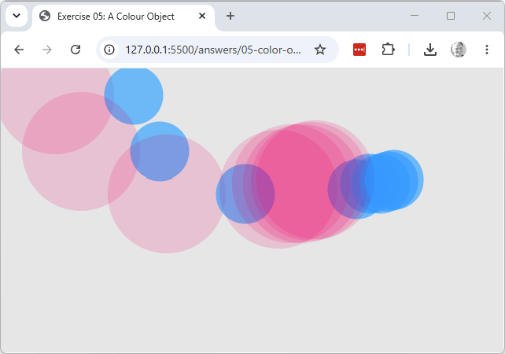

Explore & modify
Working copy: exercises/05-color-object/.
- Create a second
color()object and use it to draw a second circle in a different colour from the first, on the same click. - In
setup(), createcolwith a much lower alpha value than150(a newcolor()object — there's no way to change the alpha of one that already exists), then click several times in the same spot without pressing a key to clear. Explain what you see in terms of blending with what's already on the canvas.
